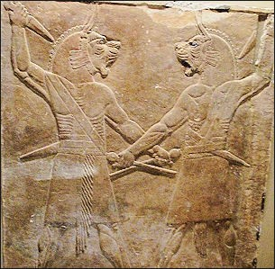
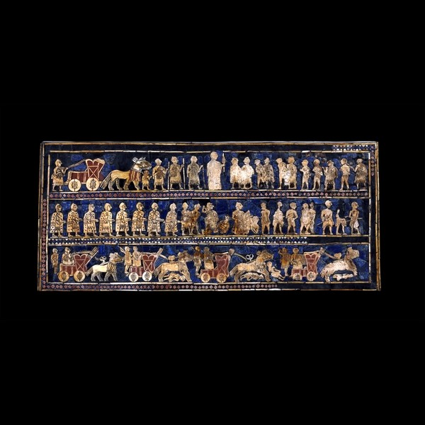
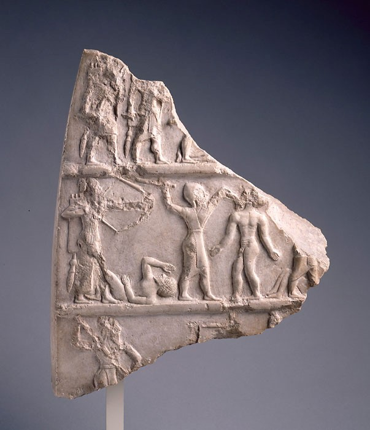
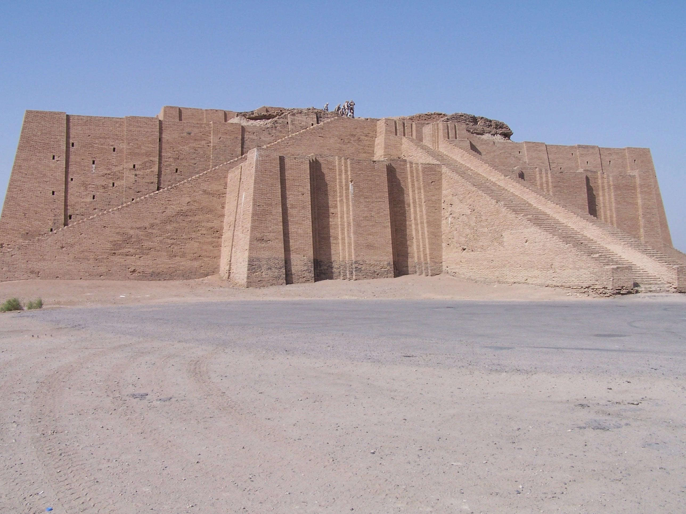

The fighting men of Mesopotamia were responsible for the survival of their state. Society -- civilization -- a way of life rested unapologetically upon their shoulders. Gods, ancestors, courts, family, all had vested interest – how could they have abandoned their duty; how could they have let them down? While the life and motivations of nobility may be at the foreground of intense study, due in part by the relative richness of palatial textual archives and high-class private repositories (Larsen 193), perhaps one of the most interesting subjects was the common man: the Mesopotamian soldier. An amalgam of pressures define the chief motivation for the farmers-turned-foot-soldiers who served in the ephemeral armies of Mesopotamia and the Greater Ancient Near East.
What it takes to serve
To consider the drive behind Ancient warfare, we must first explore the depth of motivation needed to engage in it. The Ancient Near Eastern theater featured the first organized war between militarized societies, with the advent of Imperial armies leading to monumental battles. By virtue of the weapons technology at the time, such massive battles took on a far more intimate character. Weapons during the Bronze Age were in large part the metal analogs of Neolithic hunting tools (Hamblin 20). Weapons were primitive; they required hand-to-hand combat and concentrated effort to kill with.

Figure 1: Assyrian Guardian Spirits depicted in this exhibit in the British Museum show representation of combat and further religious link to combat.

Figure 2: The War Side of the Standard of Ur, another depiction of Mesopotamian Combat
As seen from Figure 1 and Figure 2, warfare by necessity was personal and close quarters. Once in the grips of a fight with the enemy, there could be no withdrawal – only a fierce, drawn-out clash resulting in the loser paying the ultimate price. What could be motivating the average solider to engage in such zero-sum competition?
Chief among the forces compelling these soldiers to engage in such high stakes combat was the instinct for self-preservation. These soldiers, taken from all parts of society, were serving as a form of taxation called corvee, a system of tribute civil labor (Barjamovic ANE103, F2015, W2A). They had, from what extant texts seem to suggest, little say in the matter. In this way, the system of corvee was both universal and surprisingly egalitarian. Interestingly enough, there is a provision in Hammurabi’s Code of Laws that specifically forbids the shirking of this draft: “If a captain or a soldier has been ordered upon "the way of the king," and has not gone, but has hired a substitute, that officer or soldier shall be slain. The substitute shall take his house” (Hammurabi 25). In this way, one of the strongest motivations can be identified. In the heat of combat, one fights to stay alive.
For faith or glory?

Figure 3: Victory Stele of Naram-Sin in the Louvre
A classic example of imperial Akkadian art, this stele depicts the victory of King Naram-Sin, grandson of Sargon, over the Lullubi. Discovered in Iranian Susa; on display in The Lourve.
Despite the legal necessity to wage war, it is not known how effectively corvee law was enforced, and whether citizens managed to avoid such obligations to the state through illicit means or otherwise. Also, to attribute all the motivations of soldiers purely to self-preservation would not explain the incentive to act in any way except those that prevent injury, which could not have happened for there to have been effective warfare. If self-preservation were the only motive, one could assume there would only be perfunctory combat, not the heroic kind visual sources seem to suggest. Depictions of triumph in the throes of war dominate the subjects of many beautiful works of art, as seen in Figure 3. The motivations of the King and higher war officials remain relatively obvious: power, glory, land, but what compelled the citizen-solider to fight as valiantly as depicted in the Stele? To identify these forces, two questions must be answered: what could a Mesopotamian solider hope to gain from the endeavor of war and how invested were they in the practice of war-making?
To the latter question, an important distinction must be made. It can be assumed that many of artistic works romanticized the subject of war, a theme common through art in many parts of the world. Many of the literary texts available and art forms depict war in its most gallant form: with valiant warriors, almighty kings, determined dispatch, and intense combat. This much is seen in a translation of an Akkadian poem, as translated by Benjamin Foster in
Before the muses: an anthology of Akkadian literature:
The arrayed army stood ready for battle; the fight commenced on the battlefield.
A great excitement rose among them; the warriors trembled in anticipation.
Aššur went first, igniting a devastating fire upon the enemy.
Enlil danced in the midst of the foe, causing the flames to flare.
Anu smashed the ruthless club upon the wrongdoers.
The light of Sin kindled a fury of battle around them.
Heroic Adad made a hurricane rage over them.
Šamaš, the Lord of Verdicts, blinded the army of Sumer and Akkad.
Brave Ninurta, the foremost among the gods, ruined their weapons.
Ištar beat her drum, robbing the warriors of their mind.
Behind the gods, in whom he trusted, the King charged into battle before his men.
He shot the arrow – gruesome and irresistible.
The weapons of Aššur scattered the enemy like corpses.
The warriors of Aššur shout, “Attack!” and face death.
They bellow, “Ištar, mercy!”, praising the goddess in the midst of battle.
They are teeming with rage, changing shape like the storm-bird Anzu.
With an inextinguishable fury they throw themselves into battle without armor.
They bare their chests. Tear their clothes.
Bind their hair. Smear their weapons.
The majestic, brave, men dance through the ferocity of the melee.
They thrust themselves at each other like fighting lions with sparkling eyes.
Turmoil fills the battle, as a tempest that rages across the land.
And death wells up in the eyes of the warrior, as on a day of thirst in the desert.
These soldiers are described in their valiance as “majestic, brave, men danc[ing] through the ferocity of the melee. They thrust themselves at each other like fighting lions with sparkling eyes”. Yet in all reality, these were citizens essentially paying their taxes through corvee. They had farms and families to care for – they could not afford to just die on the battlefield for no exigent reason. What then, was propelling these men to go to war at the beckon of their king?
The poem paints a beautiful scene of the spiritual grandeur associated with the conflict. As purported by the poet, the poem gives a glimpse into the mind and influences governing the soldier. Chief among these elements are the religious invocations, making frequent mention of the divine intervention of
Istar, Adad, Samas, Ninurta, characterizing the battles as the raging collisions of Gods. Furthermore, having the King rally and fight with the soldiers provided both social and further spiritual pressure. Mesopotamian tradition had the people fixated on the mystic of royalty (Foster 2011, 39). Royal mandate and spirituality were inextricably linked. To have the pinnacle of society and spirituality relying and observing the soldiers’ performance must have exerted tremendous stress and incentive to perform, no doubt a motivation to fight passionately.
Yet, the influence religion had on the soldiers of Mesopotamia is hotly debated. As Hamblin points out, “When the King acted as a warlord, he was acting under the express command of the gods as revealed through divination and oracles. The gods themselves were the ultimate arbiters of war” (37). Mesopotamia was a diverse and socially fluid region; religion motivated the average foot soldier and in varying degrees depending on the time and state. For many, the impact of disseminated dogma were marginal, as held by Oppenheim in his 1964 essay: “One obtains the impression – confirmed by other indications – that the influence of religion on the individual, as well as on the community as a whole, was unimportant in Mesopotamia” (176). He continues by stating that “the participation of the individual in the cult of the city deity was restricted in the extreme”; essentially, he held that religion had little influence on the average person in the Ancient Near East. While there are certainly contrasting opinions to Oppenheim’s convictions, he makes an excellent point. There is a large gap in the understanding of how the cultic institutions operated. Much of theory can be described as mere conjectural analysis from vague archaeological sources: too inconclusive to make sweeping generalities of the impact of religion (Oppenheim 174). While it remains a theme inseparable from Ancient Near Eastern warfare, its role in the psychology of the Ancient warrior is obscure.
It is important, however, that we not dismiss religion just because we do not understand it. Cultic institutions had strong significance throughout the Ancient Near East and undoubtedly influenced the value systems of its denizens, albeit in a way we may not quite understand. As stated previously, the men of Mesopotamian people respected the divine authority of the King and his place as an intermediary between god and man (Foster 2011, 39).
So, if religion had perhaps an obscure influence on the Mesopotamian soldier, what other influences could be affecting them? Oppenheim reveals a compelling answer: “He [the Mesopotamian individual] lived in a quite tepid religious climate within a framework of socio-economic rather than cultic coordinates” (176). This idea of socioeconomics providing class divisions in the society seems reminiscent even of modern societies today, diverging from other social models like the Caste system seen in India.
To this end, war gave the citizenry a legitimate means of social mobility. In court hierarchy, those proven in military combat and respected by the army ranked in the same tier as the clergy and scholar class, right under the class of provincial governor (Barjamovic ANE103, F2015, W6A). Between those fighting for glory, god, social standing, or pure survival, it is clear that there were ample motivation for the farmers of the Imperial Armies to perform boldly in combat.
The soldier’s psyche now
Knowing the motivation of the first Imperial soldiers can help us understand conflict in our modern age. This can be seen anecdotally in the Ba’ath regime of Iraq under Saddam Hussein.
In Iraq, Saddam utilized the very same Pan-Asian iconography used by Ancient Mesopotamia to “further his political agenda and promote his cult of personality” (Abdi 4). His propaganda machine explicitly used the same images and religious symbolism, as Abdi states, to elevate “him to the zenith of Iraqi national hierarchy as the latest in a long line of glorious leaders to guide the people of the land of twin rivers.”

Figure 4: The Great Ziggurat at Ur, restored by the Ba’ath regime to claim and perpetuate Mesopotamian lineage
Therein, he literally utilizes the same spiritual grandeur and kingship mandate to legitimize his rule as the Kings of Mesopotamia did. Saddam does as the scholars Karsh and Rausti attest: “The assumption of this weighty historical and noble legacy seemed to assert to his people and to the world that his rule was predestined and inviolable, part of a multimillennial chain” (196). Saddam explicitly diverted regime resources to restore the ziggurat in Figure 4.
He usurped control of all the nation’s chief institutions, wielding authority regally. He regenerated a modern royal court, allowing for the same social mobility structure that encouraged participation in the nation’s military. Of course, as dictator, he also wielded the absolute power of coercion, allowing for the same instincts of self-preservation to motivate his soldiers just like the Imperial soldiers of the Ancient Near East. He hits the same pressure points used to coerce the citizen to combat as was used in Mesopotamia: the instinct for self-preservation, religious and cultural encouragement, and the economic and social incentive.
As the Ba’ath regime and many like it show, the human psyche has not changed. The same things that motivated Ancient Soldiers can motivate soldiers today. With the right psychological triggers, states have the power to make good people part of great, and perhaps terrible things.
Works Cited
Abdi, K. “From Pan-Arabism to Saddam Hussein's cult of personality: Ancient Mesopotamia and Iraqi national ideology.” Journal of Social Archaeology 8, no. 1 (February 2008): 3-36. Accessed October 18, 2015.
Barjamovic, Gojko. "Ancient Lives." ANE 103. Science Center Lecture Hall E, Harvard University, Cambridge, MA. Fall 2015. Lecture.
Hamblin, William J. Warfare in the ancient Near East to 1600 BC holy warriors at the dawn of history. London New York: Routledge, 2006. Print.
Harkhu, Umangh. Scientia Militaria : South African Journal of Military Studies, 2005, Vol.33(1), pp.47-71
Foster, Benjamin R., and Karen P. Foster. Civilizations of ancient Iraq. Princeton: Princeton University Press, 2011. Print.
Foster, Benjamin R. Before the muses : an anthology of Akkadian literature. Bethesda, Md: CDL Press, 1993. Print.
Karsh, E. & Rautsi, I. 1991. Saddam Hussein: A political biography. London: Brasseys.
Larsen, Mogens Trolle. ‘What They Wrote on Clay.’ In K. Schousboe and M. T. Larsen (eds.) Literacy and Society. Copenhagen: Centre for Research in the Humanities, 1989. Pp. 121 -148.
Oppenheim, A. Leo. Ancient Mesopotamia Portrait of a Dead Civilization. Chicago: Chicago University Press. 1964. Pp. 171 - 183.